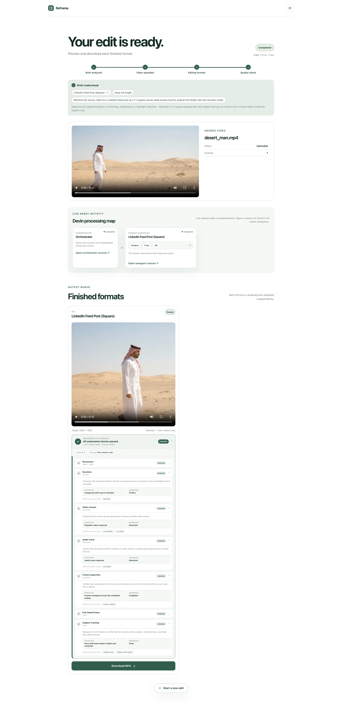
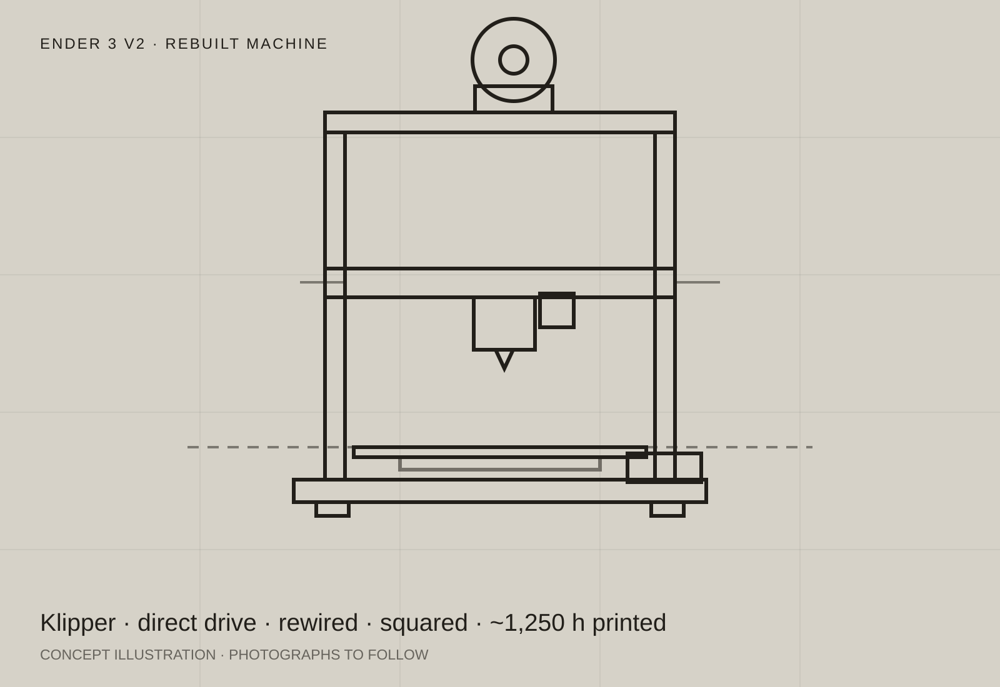
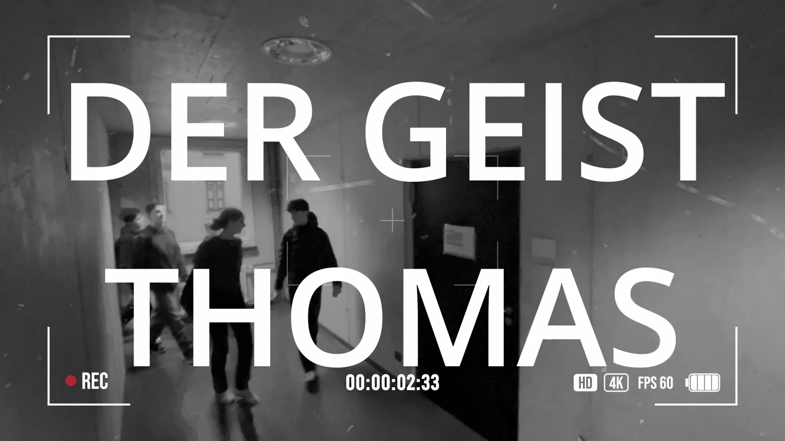

TaskMinder

An open-source school platform that grew out of a problem in my own class. Now used by more than 80 people daily.
Hey 👋
I’m Mingqi, a student engineer working across electronics, software and media.
Based in Munich and taking part in TUM’s early-study computer-science programme (Frühstudium) alongside school since October 2025.
mingqi_li@icloud.comSelected
works
An open-source school platform that grew out of a problem in my own class. Now used by more than 80 people daily.

A working pipeline that turns one video into platform-ready formats, tracks the subject and checks every render before delivery.

A cheap printer stripped to its base plate and rebuilt: squared by hand, rewired, direct drive and running a Klipper config I wrote myself.
A real-time rigid-body simulation with impulse-based collisions and tunable forces.

A model-rocket flight system in design, with redundant sensing, telemetry and parachute recovery.

My first serious film project: a school horror film restarted with classmates after our first attempt failed and about 24 hours remained.
I like building projects to see whether an idea will work. The best ones combine engineering, creativity and teamwork - and take real effort to figure out.
I’m a student at Maria-Theresia-Gymnasium in Munich, graduating in 2028. Alongside school, I have taken part in TUM’s early-study programme in computer science (Frühstudium Informatik) since October 2025. My coursework has included EIDI, PGDP, EIST and FPV.
I build across software, electronics and media, and lead weekly CAD, 3D-printing and robotics courses for other students.
More about meSelected recognition
Experience